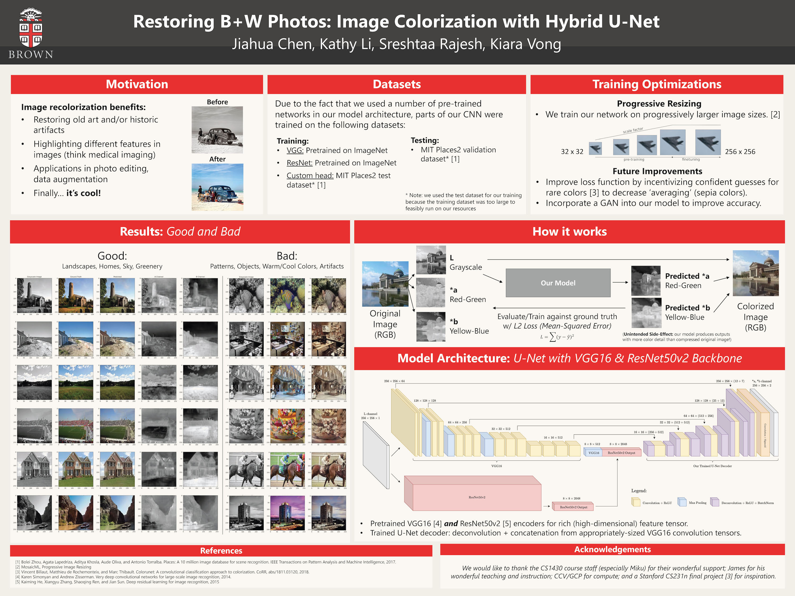
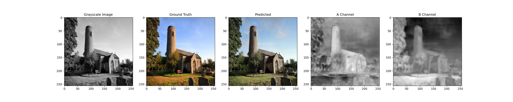
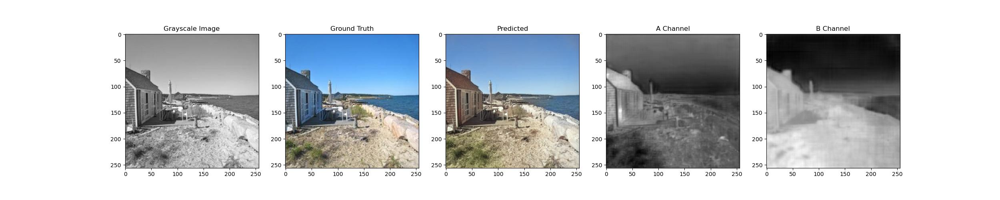
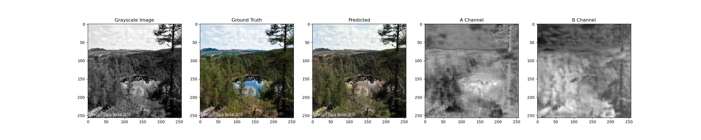
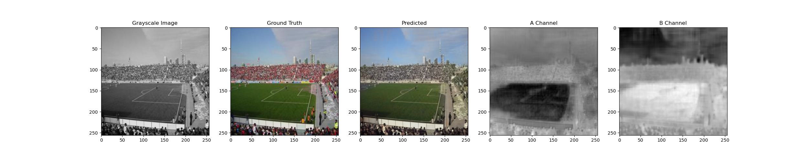
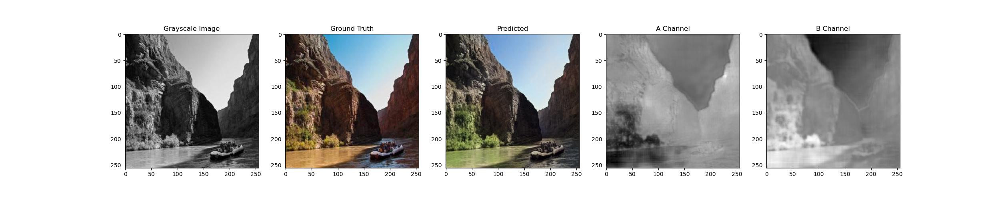
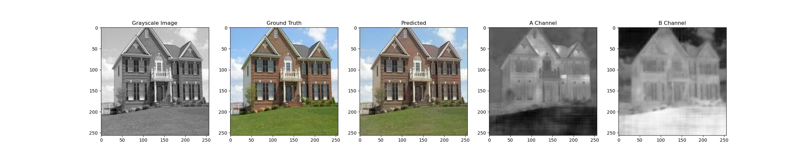
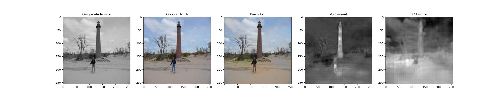

Abstract
Over the last decade, there has been a lot of interest in the process of automated picture colorization for a variety of applications, including the restoration of old or deteriorated photos. Due to the high degrees of freedom in the assignment of color information, this problem is extremely ill-posed. Many recent advances in automatic colorization involve images with a shared theme or need highly processed data as input, such as semantic maps.
We approach the colorization problem using two pre-trained convolutional neural network encoders (VGG16 and ResNet50v2), and decode using a U-Net model to produce the color output.
Introduction
Our project aims to build a system using deep learning that automatically recolorizes a grayscale image, specifically focusing on colorizing images of places. Coloring black and white images may have a significant influence in a wide range of fields, such as remastering old photos and improving surveillance feeds. A gray-scale image’s information value is restrained, therefore adding color components can convey more about its semantics.
Architecture
We use a hybrid model that uses pretrained backbones from 2 convolutional neural networks, VGG and ResNet. This allows us to gain a feature-rich bottleneck. We then use a U-Net to upsample our image: deconvolving and concatenating intermediate layers from VGG as we reach our target dimension.
We used L2 loss (MSE) and acheived a final loss of ~140-150 (a, b channels range from -128 to 128). We used progressive resizing to train weights on gradually increasing sizes (32, 64, 128, 256) to speed up training.
Result Images






